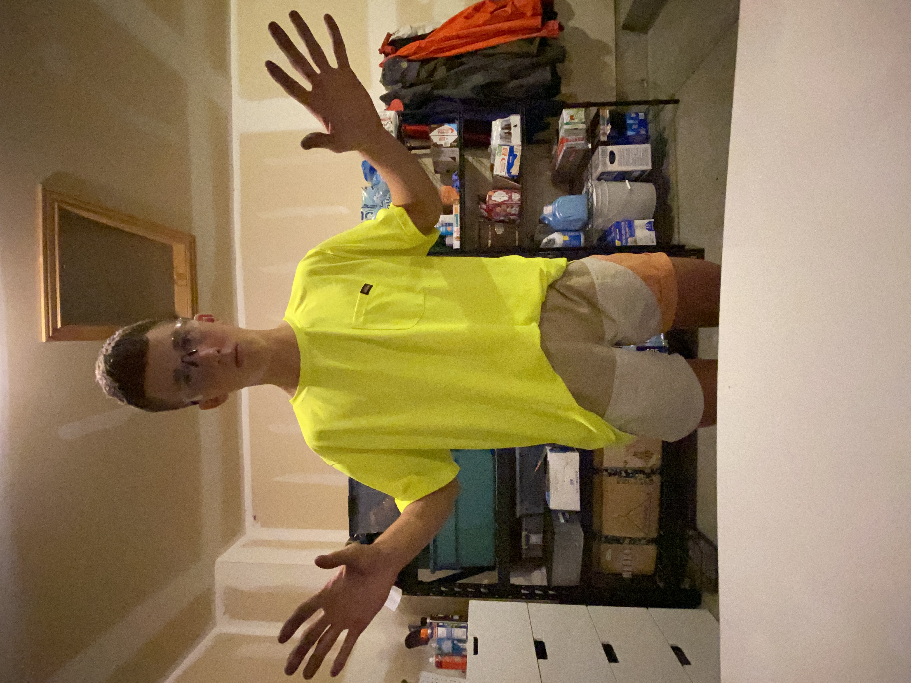

This is just a little page all about me! The first thing that you need to know about me is that I love to be active. The only problem there is that I hurt my ankle in High School so the things that I can actually do are very limited, however I still can have fun playing Pickleball or Skiing. I teach at the MTC, and I think that might be the best job that was ever created. I love to spend time with my family, and I also love to go on long drives up the canyon by myself just to think about life. Whether there's music or a U2 album, both are good.
This paragraph is going to be about random things that I am going to do in this chapter.
This paragraph is going to be about random things that I am going to do in this chapter.
This paragraph is going to be about random things that I am going to do in this chapter.

This is a list of the things that I love most in this life:
Return to Top